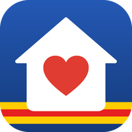

Aides et tarifs réduits à Perpignan
Cochez ce qui vous concerne pour voir les aides possibles à Perpignan. Vos réponses restent sur votre appareil : rien n'est enregistré ni envoyé.
Numéros d'urgence et d'écoute
- 15SAMU, urgence médicale
- 17Police secours
- 18Pompiers
- 112Numéro d'urgence européen, depuis n'importe quel téléphone
- 114Urgences par SMS, pour les personnes sourdes, malentendantes ou qui ne peuvent pas parler
- 115Sans abri : hébergement d'urgence (SAMU social)
- 3114Souffrance psychique, prévention du suicide, 24 h/24
- 3919Violences faites aux femmes, gratuit et anonyme
- 119Enfance en danger, 24 h/24
- 3133Maltraitance d'une personne âgée ou handicapée (victime ou témoin)
- 04 68 34 44 53CCAS de Perpignan, l'action sociale de la Ville (38 bis rue Couvent de la Merci)
Les numéros à 2, 3 ou 4 chiffres sont gratuits.
Il figure sur votre attestation dans votre espace CAF (caf.fr). Il sert à afficher le tarif des accueils de loisirs et du périscolaire de la Ville.